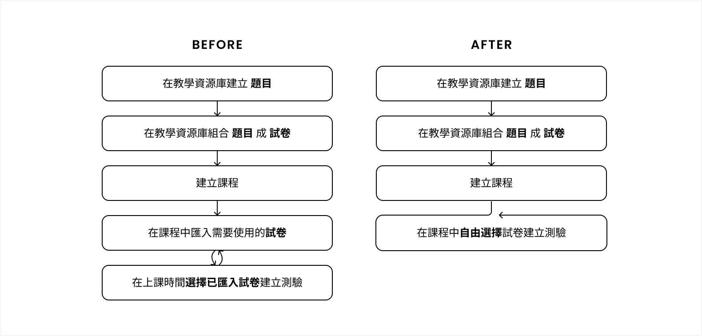
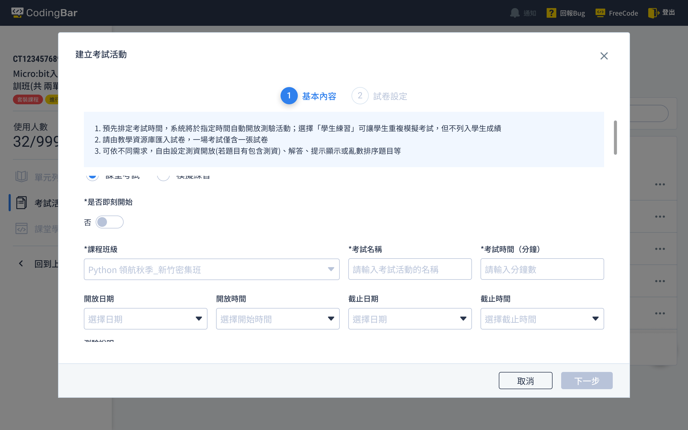

程式教學平台考試功能流程規劃與介面設計。
根據學校及補教單位需求，在系統既有架構下設計一套彈性的測驗功能，提升學生學習與教師備課效率。
CodingBar 獨家開發的程式教育平台提供教師遠端即可查看學生程式碼的功能， 期待透過數位工具改善程式教師人數不足，學生無法取得學習資源的問題。
初期平台僅為企業內部專職講師使用，產品功能情境及流程皆依照自有課程設計。 後經持續推廣，全台超過 60+ 國高中教育單位採用 CodingBar 平台，平台的測驗功能已不符合多數教學情境，因而針對測驗功能進行改版。
根據教學目標與情境，重新設計測驗功能。
CodingBar 教師平台結構將「教學資源」與「課程」分開。測驗功能雖為「砍掉重練」，但不能影響整體平台結構， 因此需在既有系統結構與規劃下，盡可能設計符合學校單位的使用流程，並保持易理解、好操作的目標。
測驗為教學過程中協助檢視學習狀態的重要機制，重新設計教師平台測驗功能時， 不僅針對教學情境與目標設計，學生平台的測驗功能亦需相互對照。
教師平台既有的測驗功能僅在課程時間中顯示入口，雖不符合學校、補習班單位使用情境，但行之有年，既有使用者已習慣。 重新設計後的功能雖更貼近使用情境，但可能造成既有使用者的不適應，而新加入使用者因對整體平台不熟悉，也會遭遇困難。
新版測驗功能於 2022 年 1 月底上線，上線後至 2022 年 6 月，學校與補教單位 成功舉辦 1373 場測驗活動， 且客服、業務 從未接到詢問測驗功能如何操作的諮詢電話。
教學者因測驗活動而被綑綁的時間被釋放，週末更能安心安排個人活動；平台的使用簡便性和高效性，提升了整體教學效率和用戶滿意度。
重新定義測驗的基本元素：考卷資源＋測驗活動。
考卷是一個測驗活動的素材，而測驗時間長短、開放時間、是否提供測資…等是活動的參數，在測驗活動自由組合不同的參數，讓測驗活動更彈性、多元，以符合各種情境。
建立於「測驗＝資源＋活動」的概念上，考卷資源儲存於教學資源庫中，可以被應用到各種不同的班級、課程、活動中； 使用者不需要再將考卷一一勾選匯入課程中也可以在課程下建立測驗活動，大幅節省老師的備課時間。
建立測驗活動時，可透過活動類型設定為一次性且正式計算成績的考試，或是可重複參與的模擬練習。
以往測驗活動僅能於課程期間發起，並且設定測驗時長。為支援學生時間的彈性，同時解決教師時間被測驗活動綁架，新增活動開放起迄時間； 教師可以可以預先排定測驗活動，系統將於指定時間開放測驗，學生可以在測驗開放時間內，自由參加。
測驗功能改版調整幅度較大，可說是全新功能上線；我從用戶的思維，將新版測驗功能切割成數個使用情境， 並搭配詳細步驟圖文，協助新舊用戶認識平台新功能。新功能上線公告同步提供教學文件。